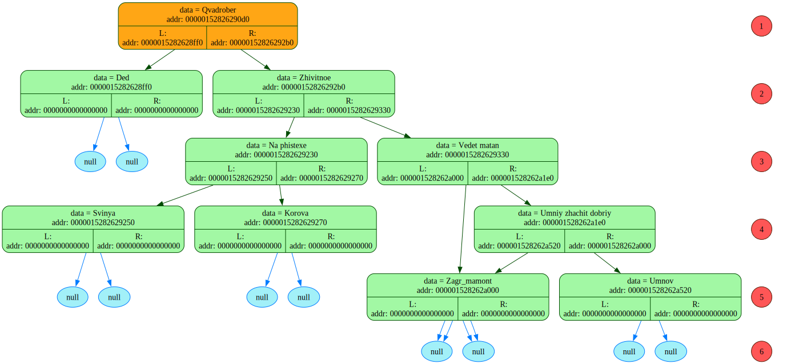
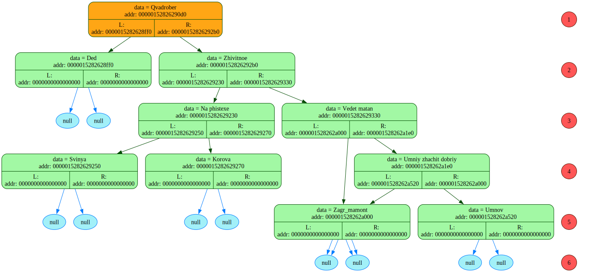

READ_file: addr buffer_adr = 2384108164432
=============================================================================
Symbol = <{>, his addr = 2384108164432
Symbol = < >, his addr = 2384108164433
Symbol = <">, his addr = 2384108164434
Symbol = <A>, his addr = 2384108164435
Symbol = <k>, his addr = 2384108164436
Symbol = <i>, his addr = 2384108164437
Symbol = <n>, his addr = 2384108164438
Symbol = <a>, his addr = 2384108164439
Symbol = <t>, his addr = 2384108164440
Symbol = <o>, his addr = 2384108164441
Symbol = <r>, his addr = 2384108164442
Symbol = <">, his addr = 2384108164443
symbol = <\r>, addr = 2384108164444
symbol = <\n>, addr = 2384108164445
Symbol = < >, his addr = 2384108164446
Symbol = <{>, his addr = 2384108164447
Symbol = < >, his addr = 2384108164448
Symbol = <">, his addr = 2384108164449
Symbol = <Y>, his addr = 2384108164450
Symbol = <E>, his addr = 2384108164451
Symbol = <S>, his addr = 2384108164452
Symbol = <_>, his addr = 2384108164453
Symbol = <Y>, his addr = 2384108164454
Symbol = <E>, his addr = 2384108164455
Symbol = <S>, his addr = 2384108164456
Symbol = <">, his addr = 2384108164457
symbol = <\r>, addr = 2384108164458
symbol = <\n>, addr = 2384108164459
Symbol = < >, his addr = 2384108164460
Symbol = < >, his addr = 2384108164461
Symbol = <{>, his addr = 2384108164462
Symbol = < >, his addr = 2384108164463
Symbol = <">, his addr = 2384108164464
Symbol = <E>, his addr = 2384108164465
Symbol = <t>, his addr = 2384108164466
Symbol = <o>, his addr = 2384108164467
Symbol = < >, his addr = 2384108164468
Symbol = <z>, his addr = 2384108164469
Symbol = <h>, his addr = 2384108164470
Symbol = <e>, his addr = 2384108164471
Symbol = < >, his addr = 2384108164472
Symbol = <a>, his addr = 2384108164473
Symbol = <z>, his addr = 2384108164474
Symbol = <a>, his addr = 2384108164475
Symbol = <m>, his addr = 2384108164476
Symbol = <a>, his addr = 2384108164477
Symbol = <t>, his addr = 2384108164478
Symbol = <">, his addr = 2384108164479
symbol = <\r>, addr = 2384108164480
symbol = <\n>, addr = 2384108164481
Symbol = < >, his addr = 2384108164482
Symbol = < >, his addr = 2384108164483
Symbol = < >, his addr = 2384108164484
Symbol = <{>, his addr = 2384108164485
Symbol = <}>, his addr = 2384108164486
symbol = <\r>, addr = 2384108164487
symbol = <\n>, addr = 2384108164488
Symbol = < >, his addr = 2384108164489
Symbol = < >, his addr = 2384108164490
Symbol = < >, his addr = 2384108164491
Symbol = <{>, his addr = 2384108164492
Symbol = <}>, his addr = 2384108164493
symbol = <\r>, addr = 2384108164494
symbol = <\n>, addr = 2384108164495
Symbol = < >, his addr = 2384108164496
Symbol = < >, his addr = 2384108164497
Symbol = <}>, his addr = 2384108164498
symbol = <\r>, addr = 2384108164499
symbol = <\n>, addr = 2384108164500
Symbol = < >, his addr = 2384108164501
Symbol = < >, his addr = 2384108164502
Symbol = <{>, his addr = 2384108164503
Symbol = <}>, his addr = 2384108164504
symbol = <\r>, addr = 2384108164505
symbol = <\n>, addr = 2384108164506
Symbol = < >, his addr = 2384108164507
Symbol = <}>, his addr = 2384108164508
symbol = <\r>, addr = 2384108164509
symbol = <\n>, addr = 2384108164510
Symbol = < >, his addr = 2384108164511
Symbol = <{>, his addr = 2384108164512
Symbol = < >, his addr = 2384108164513
Symbol = <">, his addr = 2384108164514
Symbol = <S>, his addr = 2384108164515
Symbol = <k>, his addr = 2384108164516
Symbol = <i>, his addr = 2384108164517
Symbol = <b>, his addr = 2384108164518
Symbol = <i>, his addr = 2384108164519
Symbol = <d>, his addr = 2384108164520
Symbol = <i>, his addr = 2384108164521
Symbol = < >, his addr = 2384108164522
Symbol = <d>, his addr = 2384108164523
Symbol = <o>, his addr = 2384108164524
Symbol = <b>, his addr = 2384108164525
Symbol = < >, his addr = 2384108164526
Symbol = <d>, his addr = 2384108164527
Symbol = <o>, his addr = 2384108164528
Symbol = <b>, his addr = 2384108164529
Symbol = < >, his addr = 2384108164530
Symbol = <y>, his addr = 2384108164531
Symbol = <e>, his addr = 2384108164532
Symbol = <s>, his addr = 2384108164533
Symbol = < >, his addr = 2384108164534
Symbol = <y>, his addr = 2384108164535
Symbol = <e>, his addr = 2384108164536
Symbol = <s>, his addr = 2384108164537
Symbol = <">, his addr = 2384108164538
symbol = <\r>, addr = 2384108164539
symbol = <\n>, addr = 2384108164540
Symbol = < >, his addr = 2384108164541
Symbol = < >, his addr = 2384108164542
Symbol = <{>, his addr = 2384108164543
Symbol = < >, his addr = 2384108164544
Symbol = <">, his addr = 2384108164545
Symbol = <S>, his addr = 2384108164546
Symbol = <o>, his addr = 2384108164547
Symbol = <n>, his addr = 2384108164548
Symbol = <y>, his addr = 2384108164549
Symbol = <a>, his addr = 2384108164550
Symbol = < >, his addr = 2384108164551
Symbol = <t>, his addr = 2384108164552
Symbol = <o>, his addr = 2384108164553
Symbol = <p>, his addr = 2384108164554
Symbol = <i>, his addr = 2384108164555
Symbol = <">, his addr = 2384108164556
symbol = <\r>, addr = 2384108164557
symbol = <\n>, addr = 2384108164558
Symbol = < >, his addr = 2384108164559
Symbol = < >, his addr = 2384108164560
Symbol = < >, his addr = 2384108164561
Symbol = <{>, his addr = 2384108164562
Symbol = <}>, his addr = 2384108164563
symbol = <\r>, addr = 2384108164564
symbol = <\n>, addr = 2384108164565
Symbol = < >, his addr = 2384108164566
Symbol = < >, his addr = 2384108164567
Symbol = < >, his addr = 2384108164568
Symbol = <{>, his addr = 2384108164569
Symbol = <}>, his addr = 2384108164570
symbol = <\r>, addr = 2384108164571
symbol = <\n>, addr = 2384108164572
Symbol = < >, his addr = 2384108164573
Symbol = < >, his addr = 2384108164574
Symbol = <}>, his addr = 2384108164575
symbol = <\r>, addr = 2384108164576
symbol = <\n>, addr = 2384108164577
Symbol = < >, his addr = 2384108164578
Symbol = < >, his addr = 2384108164579
Symbol = <{>, his addr = 2384108164580
Symbol = < >, his addr = 2384108164581
Symbol = <">, his addr = 2384108164582
Symbol = <N>, his addr = 2384108164583
Symbol = <a>, his addr = 2384108164584
Symbol = <s>, his addr = 2384108164585
Symbol = <t>, his addr = 2384108164586
Symbol = <y>, his addr = 2384108164587
Symbol = <a>, his addr = 2384108164588
Symbol = <_>, his addr = 2384108164589
Symbol = <t>, his addr = 2384108164590
Symbol = <o>, his addr = 2384108164591
Symbol = <p>, his addr = 2384108164592
Symbol = <i>, his addr = 2384108164593
Symbol = <">, his addr = 2384108164594
symbol = <\r>, addr = 2384108164595
symbol = <\n>, addr = 2384108164596
Symbol = < >, his addr = 2384108164597
Symbol = < >, his addr = 2384108164598
Symbol = < >, his addr = 2384108164599
Symbol = <{>, his addr = 2384108164600
Symbol = <}>, his addr = 2384108164601
symbol = <\r>, addr = 2384108164602
symbol = <\n>, addr = 2384108164603
Symbol = < >, his addr = 2384108164604
Symbol = < >, his addr = 2384108164605
Symbol = < >, his addr = 2384108164606
Symbol = <{>, his addr = 2384108164607
Symbol = <}>, his addr = 2384108164608
symbol = <\r>, addr = 2384108164609
symbol = <\n>, addr = 2384108164610
Symbol = < >, his addr = 2384108164611
Symbol = < >, his addr = 2384108164612
Symbol = <}>, his addr = 2384108164613
symbol = <\r>, addr = 2384108164614
symbol = <\n>, addr = 2384108164615
Symbol = < >, his addr = 2384108164616
Symbol = <}>, his addr = 2384108164617
symbol = <\r>, addr = 2384108164618
symbol = <\n>, addr = 2384108164619
Symbol = <}>, his addr = 2384108164620
symbol = <\r>, addr = 2384108164621
symbol = <\n>, addr = 2384108164622
symbol = <\0>, addr = 2384108164623
=============================================================================
onegin -> buffer_addr[0] = { "Akinator"
{ "YES_YES"
{ "Eto zhe azamat"
{}
{}
}
{}
}
{ "Skibidi dob dob yes yes"
{ "Sonya topi"
{}
{}
}
{ "Nastya_topi"
{}
{}
}
}
}
Я добавил узел: Akinator
Его адрес: 0000022b17eb90f0
Тут должен быть один вызов
onegin -> buffer_addr[0] = { "YES_YES"
{ "Eto zhe azamat"
{}
{}
}
{}
}
{ "Skibidi dob dob yes yes"
{ "Sonya topi"
{}
{}
}
{ "Nastya_topi"
{}
{}
}
}
}
Я добавил узел: YES_YES
Его адрес: 0000022b17eb9170
onegin -> buffer_addr[0] = { "Eto zhe azamat"
{}
{}
}
{}
}
{ "Skibidi dob dob yes yes"
{ "Sonya topi"
{}
{}
}
{ "Nastya_topi"
{}
{}
}
}
}
Я добавил узел: Eto zhe azamat
Его адрес: 0000022b17eb9230
onegin -> buffer_addr[0] = {}
{}
}
{}
}
{ "Skibidi dob dob yes yes"
{ "Sonya topi"
{}
{}
}
{ "Nastya_topi"
{}
{}
}
}
}
Я скипнулся, onegin -> buffer_addr = <{}
}
{}
}
>
onegin -> buffer_addr[0] = {}
}
{}
}
{ "Skibidi dob dob yes yes"
{ "Sonya topi"
{}
{}
}
{ "Nastya_topi"
{}
{}
}
}
}
Я скипнулся, onegin -> buffer_addr = <{}
}
{ "Skibidi >
onegin -> buffer_addr[0] = {}
}
{ "Skibidi dob dob yes yes"
{ "Sonya topi"
{}
{}
}
{ "Nastya_topi"
{}
{}
}
}
}
Я скипнулся, onegin -> buffer_addr = <{ "Skibidi dob dob y>
onegin -> buffer_addr[0] = { "Skibidi dob dob yes yes"
{ "Sonya topi"
{}
{}
}
{ "Nastya_topi"
{}
{}
}
}
}
Я добавил узел: Skibidi dob dob yes yes
Его адрес: 0000022b17eb9250
onegin -> buffer_addr[0] = { "Sonya topi"
{}
{}
}
{ "Nastya_topi"
{}
{}
}
}
}
Я добавил узел: Sonya topi
Его адрес: 0000022b17eb92b0
onegin -> buffer_addr[0] = {}
{}
}
{ "Nastya_topi"
{}
{}
}
}
}
Я скипнулся, onegin -> buffer_addr = <{}
}
{ "Nastya>
onegin -> buffer_addr[0] = {}
}
{ "Nastya_topi"
{}
{}
}
}
}
Я скипнулся, onegin -> buffer_addr = <{ "Nastya_topi"
>
onegin -> buffer_addr[0] = { "Nastya_topi"
{}
{}
}
}
}
Я добавил узел: Nastya_topi
Его адрес: 0000022b17eb9290
onegin -> buffer_addr[0] = {}
{}
}
}
}
Я скипнулся, onegin -> buffer_addr = <{}
}
}
}
>
onegin -> buffer_addr[0] = {}
}
}
}
Я скипнулся, onegin -> buffer_addr = <(null)>
(Akinator(YES_YES(Eto zhe azamat))(Skibidi dob dob yes yes(Sonya topi)(Nastya_topi)))
 (Akinator(YES_YES(Eto zhe azamat))(Skibidi dob dob yes yes(Sonya topi)(Nastya_topi(Danya_topi))))

(Akinator(YES_YES(Eto zhe azamat))(Skibidi dob dob yes yes(Sonya topi)(Nastya_topi(Danya_topi))))
